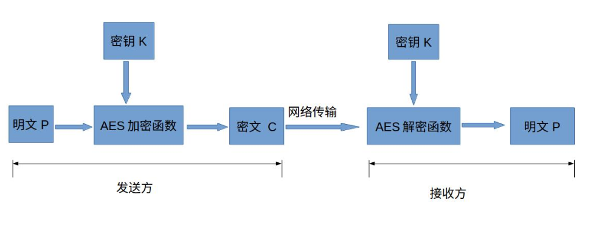
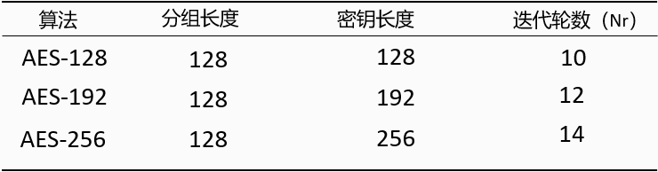
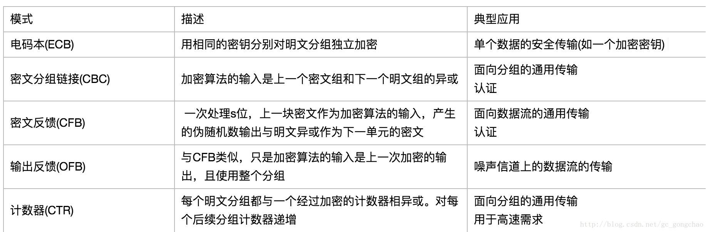
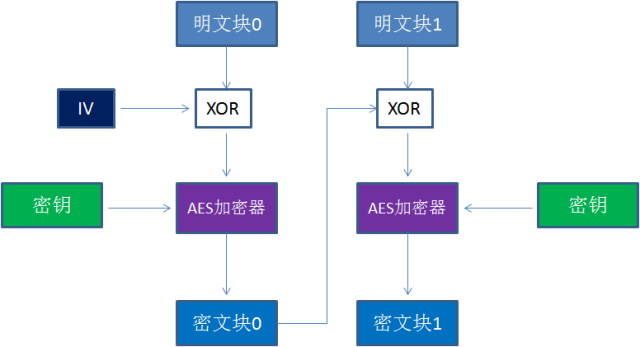
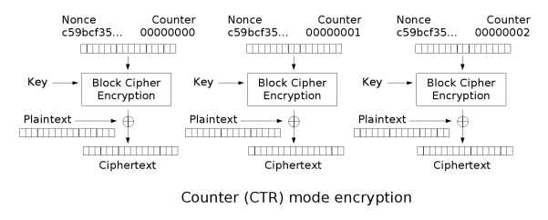
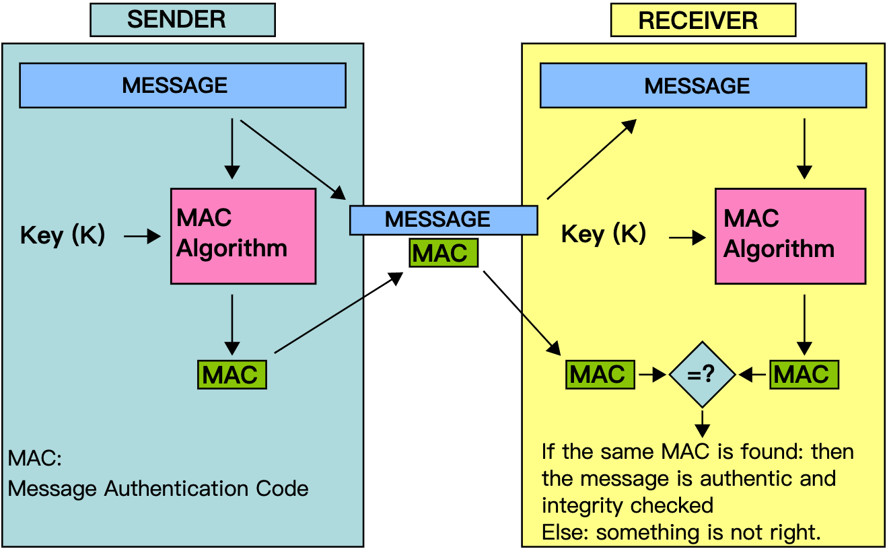
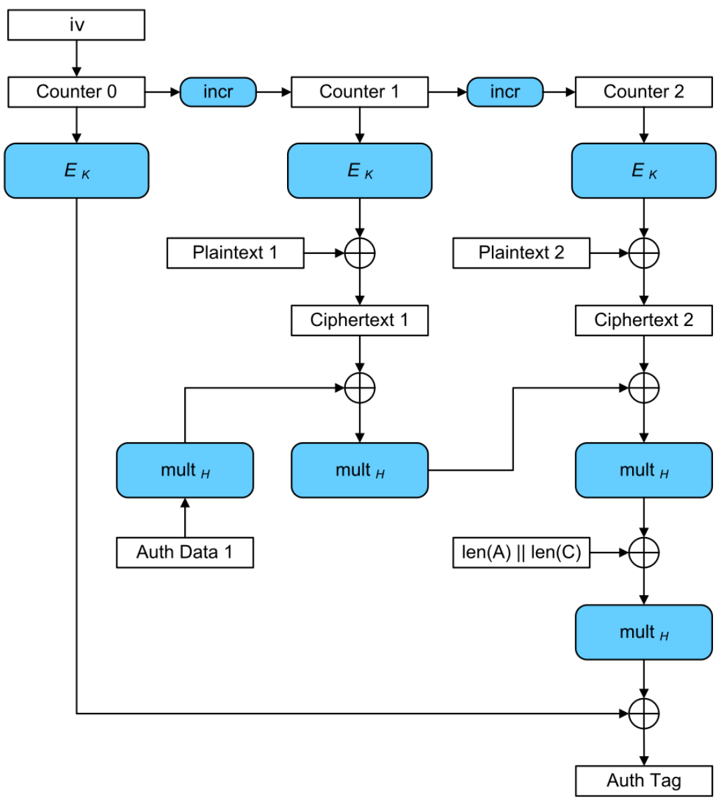

一、什么是AES加密？
常见的加密主要分为两类：对称加密和非对称加密，AES加密就是对称加密的一种，即加密和解密使用相同的一把密钥。它的全称是Advanced Encryption Standard(高级加密标准)，主要是用来取代DES加密算法，目前已经被全世界广泛采用，各大处理器厂商也在各自的CPU中，集成了专门的AES指令集，从而在硬件层面提升了AES加解密的速度。
二、AES基本构成
因为AES属于对称加密，我们可以先了解一下对称加密的流程

1.对称加密相关概念
- 明文P(plainText)：未经加密的数据
- 密钥K(key)：用来加密明文的密码。在对称加密算法中，加密与解密的密钥是相同的，由双方协商产生，绝不可以泄漏
- 密文C(cipherText): 经过加密的数据
- 加密函数E(encrypt)：C = E(K, P)，即将明文和密钥作为参数，传入加密函数中，就可以获得密文
- 解密函数D(decrypt)：P = D(K, C)，即将密文和密钥作为参数，传入解密函数中，就可以获得明文
说到这里，你可能会觉得加解密函数很神奇，他们是如何实现数据转换的呢？一种简单的做法是XOR运算(异或运算)，XOR运算的神奇之处是：如果对一个值连续做两次XOR，会返回这个值本身
1 | // 第一次 XOR |
XOR 的这个特点，使得它可以用于信息的加密
1 | plainText XOR key // cipherText |
了解了上述概念，我们再来看AES的构成
2.AES加密相关概念
- 分组(或者叫块)：AES是一种分组加密技术，分组加密就是把明文分成一组一组的，每组长度相等，每次加密一组数据，直到加密完整个明文。那你可能要问：为何要进行分组呢？比如一个应用程序总共就只能获得3M的内存空间来执行，而需要加密的文件是100M，这个时候就不得不进行文件拆解加密。在AES标准规范中，分组长度只能是128 bits，也就是每个分组为16个bytes
- 密钥长度：AES支持的密钥长度可以是128 bits、192 bits或256 bits。密钥的长度不同，推荐加密轮数也不同，如下表：

加密轮数越多，当然安全性越好，但也更耗费时间 - 加密模式：因为分组加密只能加密固定长度的分组，而实际需要加密的明文可能超过分组长度，此时就要对分组密码算法进行迭代，以完成整个明文加密，迭代的方法就是加密模式。它有很多种，常见的工作模式如下图：
 - 初始向量(IV，Initialization Vector)：它的作用和MD5的“加盐”有些类似，目的是防止同样的明文块，始终加密成同样的密文块，以CBC模式为例：

在每一个明文块加密前，会让明文块和一个值先做异或操作。IV作为初始化变量，参与第一个明文块的异或，后续的每一个明文块和它前一个明文块所加密出的密文块相异或，从而保证加密出的密文块都不同。 - 填充方式(Padding)：由于密钥只能对确定长度的数据块进行处理，而数据的长度通常是可变的，因此需要对最后一块做额外处理，在加密前进行数据填充。常用的模式有PKCS5, PKCS7, NOPADDING
- 附加消息(AAD,Additional Authenticated Data)：附加消息不是重要数据，它只是可以包含在协议中的纯数据，需要对其进行完整性保护，但不需要加密。一个很好的例子是加密IP数据包的标头。如果对它进行加密，则不能将其用于路由；如果不保护它的完整性，则攻击者可能会更改消息的长度或源地址，而收件人却不知道
上述这些概念，通常会以参数的形式，出现在前后端的加密工具中，在使用之前，我们需要协商统一，才不会出现问题。
三、AES GCM模式
上文提到了AES工作模式的概念，在介绍GCM之前，我们需要先了解下CTR模式
1.CTR(Counter Mode，计数器模式)

图中可以看出，加密过程使用了密钥、Nonce(类似IV)、Counter(一个从0到n的编号)，与上文提及的CBC模式相比，CTR最大的优势是可以并行执行，因为所有的块只依赖于Nonce与Counter，并不会依赖于前一个密文块，适合高速传输需求。但CTR不能提供密文消息完整性校验的功能(未被篡改)，所以我们需要引入另一个概念：MAC(消息认证码)
2.MAC(Message Authentication Code, 消息认证码)
是一种用来确认消息完整性并进行认证的技术。通过输入消息与共享密钥，可以生成一段固定长度的数据(MAC值)

收发双方需要提前共享一个密钥，发送者使用密钥生成消息的MAC值，并随消息一起发送，接收者通过共享密钥计算收到消息的MAC值，与随附的MAC值做比较，从而判断消息是否被改过(完整性)，对于篡改者，由于没有密钥(认证)，也就无法对篡改后的消息计算MAC值
3.GMAC (Galois message authentication code mode, 伽罗华消息认证码)
GMAC就是利用伽罗华域(Galois Field，GF，有限域)乘法运算来计算消息的MAC值
4.GCM(Galois/Counter Mode)
GCM是认证加密模式中的一种，它结合了上述两者的特点(GCM中的G就是指GMAC，C就是指CTR)，能同时确保数据的保密性、完整性及真实性，另外，它还可以提供附加消息的完整性校验，加密流程如下图:

就像CTR模式下一样，先对块进行顺序编号，然后将该块编号与初始向量(IV)组合，并使用密钥k，对输入做AES加密，然后，将加密的结果与明文进行XOR运算来生成密文。像CTR模式下一样，应该对每次加密使用不同的IV。对于附加消息，会使用密钥H(由密钥K得出)，运行GMAC，将结果与密文进行XOR运算，从而生成可用于验证数据完整性的身份验证标签。最后，密文接收者会收到一条完整的消息，包含密文、IV(计数器CTR的初始值)、身份验证标签(MAC值)。
四、总结
随着科学的发展，加密技术已经融入到了我们生活的方方面面，而AES更是在IT互联网领域，有着广泛的应用，配合上GCM模式，能够为数据的保密性、完整性、真实性提供全面的支持，了解上面这些概念，可以帮忙我们更好地掌握和使用这项技术。
由于文章中涉及的知识点较多，本人阅读材料有限，行文中难免疏漏，还望大家不吝指正。
参考文章：
Galois/Counter Mode on Wikipedia